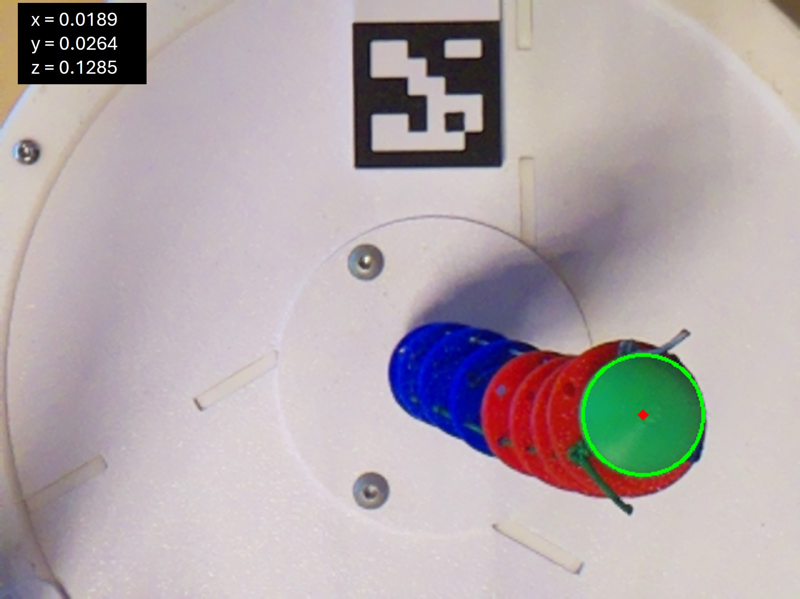
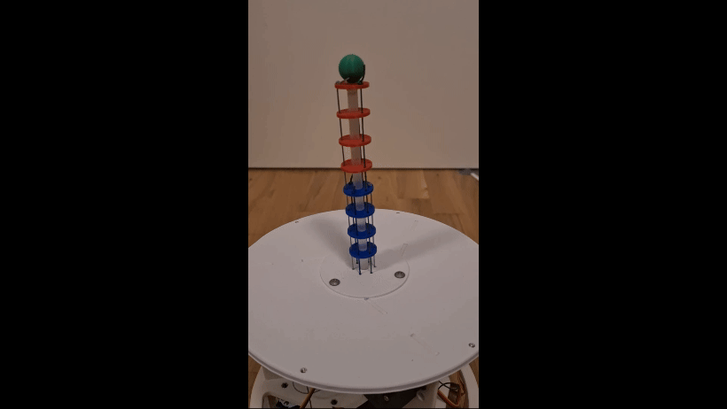

Research in robotics has been increasingly focusing on continuum robotics and soft robotics, due to the demand for more flexible and safer robotic systems. These systems provide more flexibility due to more DOF than traditional robots like articulated arms. This makes it possible to reach a desired target pose with more than one possible robot configuration. Continuum robots possess intrinsic flexibility and compliance, which makes it possible to operate in complex and confined areas as well as adapt to dynamic changes in the environment. Discrete robots are more limited in their flexibility due to the non-deformable structure. In the course of this work, state of the art kinematic models were used to compute the kinematics of a tendon-driven continuum robot. The focus of this work lies on three models, the piecewise constant curvature model, the pseudo rigid-body model and the Cosserat rod theory. These models were used to compute the forward kinematics as well as the inverse kinematics using Levenberg-Marquardt optimization. For the evaluation of the kinematic models, a prototype of a tendon-driven continuum robot was developed. After the implementation of the models, various experiments were carried out where the accuracy and the efficiency of the models was determined. The kinematic models were compared with each other and a cross comparison with state of the art works was given in order to determine the best fitting model for the continuum robot prototype. The results have shown that the piecewise constant curvature model gives a good balance between accuracy and computational demands, while the other models lack in at least one of the two aspects.
Aufgrund der Nachfrage nach mehr Flexibilität und Sicherheit von Robotiksystemen, konzentriert sich die Forschung in der Robotik zunehmend auf Kontinuumsrobotik und Soft-Robotik. Diese Systeme bieten durch ihre zusätzlichen Freiheitsgrade mehr Flexibilität als traditionelle Industrieroboter, wie z.B. Knickarmroboter. So ist es möglich, eine gewünschte Zielpose mit mehr als einer möglichen Roboterkonfiguration zu erreichen. Kontinuumsroboter verfügen über eine intrinsische Flexibilität und Nachgiebigkeit, die es ermöglicht in komplexen und engen Bereichen zu operieren und sich an dynamische Veränderungen in der Umgebung anzupassen. Diskrete Roboter sind hingegen aufgrund der starren Struktur in ihrer Flexibilität beschränkt. Im Rahmen dieser Arbeit wurden kinematische Modelle nach aktuellem Stand der Technik verwendet, um die Kinematik eines sehnengetriebenen Kontinuumroboters zu berechnen. Der Fokus liegt auf drei Modellen, dem Piecewise Constant Curvature Modell, dem Pseudo Rigid-Body Modell und der Cosserat Rod Theorie. Diese Modelle wurden zur Berechnung der Vorwärtskinematik sowie der inversen Kinematik mithilfe der Levenberg-Marquardt Optimierung herangezogen. Zur Evaluierung der kinematischen Modelle wurde ein Prototyp eines sehnengetriebenen Kontinuumroboters entwickelt. Nach der Implementierung der Modelle wurden verschiedene Experimente durchgeführt, bei denen die Genauigkeit und Effizienz der Modelle ermittelt wurde. Die kinematischen Modelle wurden miteinander verglichen und ein Quervergleich mit Arbeiten nach aktuellem Stand der Technik im Bereich der Kinematik für Kontinuumroboter wurde durchgeführt, um das am besten geeignete Modell für den Prototypen zu ermitteln. Die Ergebnisse haben gezeigt, dass das Piecewise Constant Curvature Modell ein gutes Gleichgewicht zwischen Genauigkeit und Rechenaufwand bietet, während bei den anderen Modellen mindestens einer der beiden Aspekte erheblich schlechter ausfällt.


